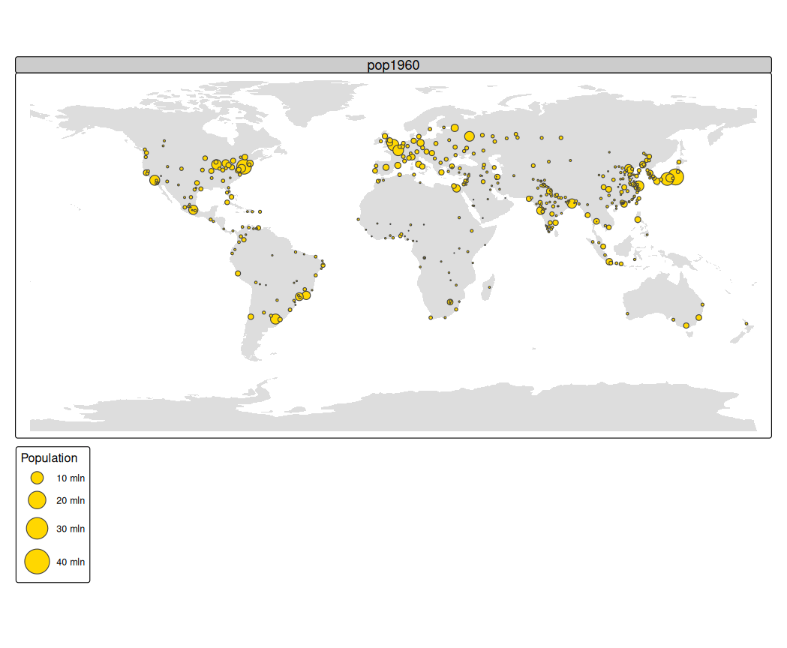
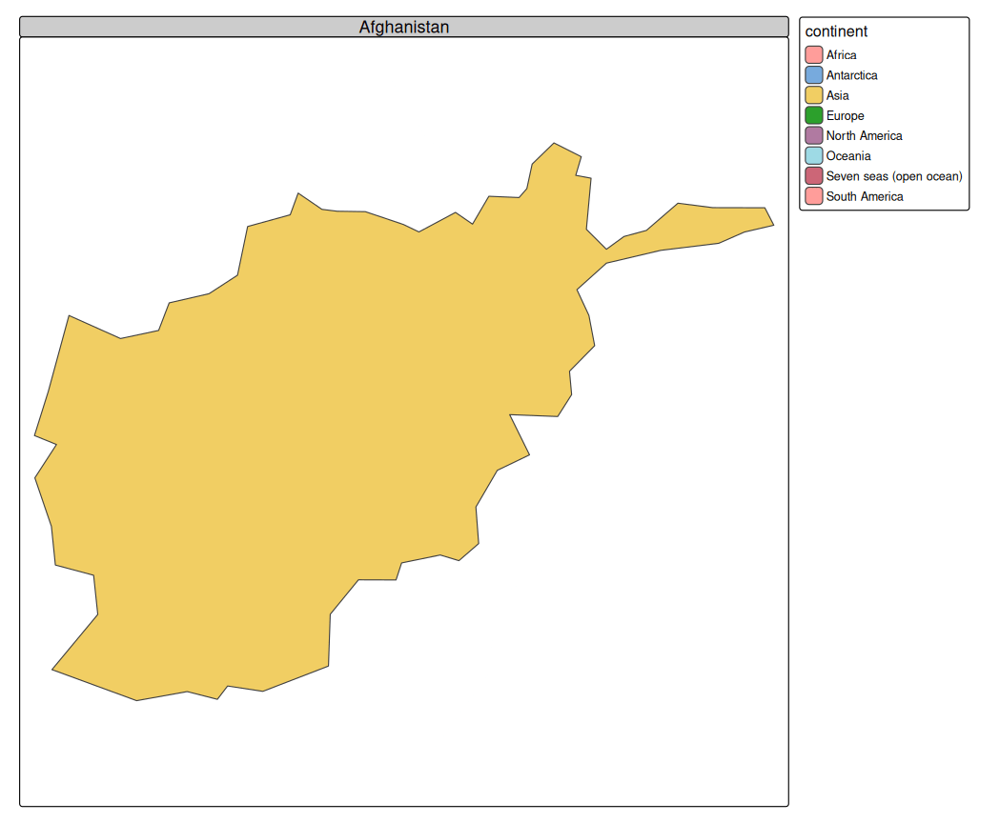
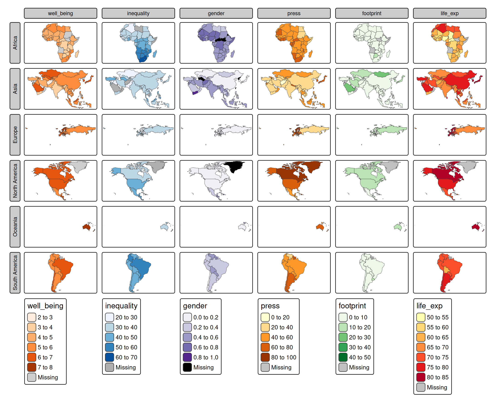
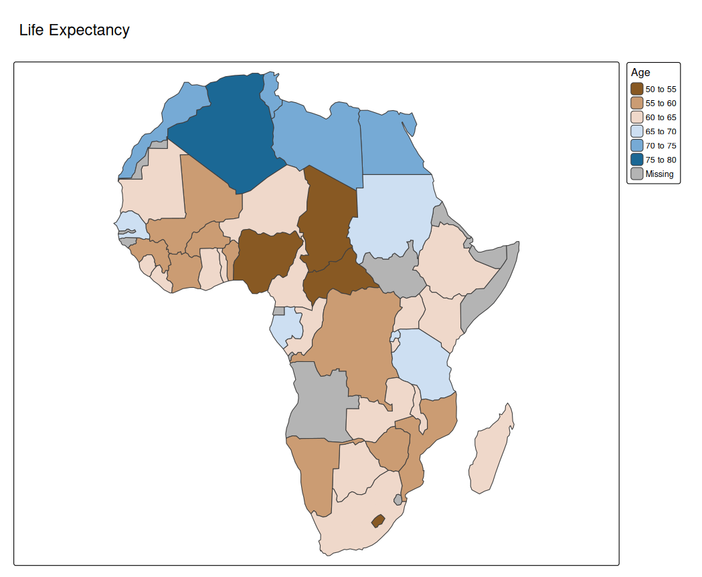

Animations in tmap can be made in two ways:
- In the same way as creating facets
- Using a transition map variable
In the same way as creating facets
tm_animate() is a function that belongs to the family of tm_facets(). It will specify a facetting dimension called "frames" (that will define the frames) and in addition specify animation settings, such as frames per second ("fps").
Recall that facets can be created by specifying multiple visual map variables or a group-by variable.
Multiple data variables for one map variable
In this example, we use bubble size a visual map variable. We specify 8 values: "pop1960", "pop1970", … "pop2023" that correspond to the estimated population sizes of metropolitan areas.
tm_shape(World) +
tm_fill("#dddddd") +
tm_shape(metro) +
tm_bubbles(size = paste0("pop", seq(1960,2030, by = 10)),
size.scale = tm_scale_continuous(values.scale = 2),
size.legend = tm_legend("Population"),
fill = "gold",
size.free = FALSE) +
tm_animate()
#> [tip] Consider a suitable map projection, e.g. by adding `+ tm_crs("auto")`.
#> This message is displayed once per session.
Without tm_animate() it will create a facet wrap.
Group by data variable
The frames argument of tm_animate() can be used to specify a group-by argument. In the next example we show all countries one by one (for this we need to cast "name" into a factor).
World$name = as.factor(World$name)
tm_shape(World) +
tm_polygons(fill = "continent") +
tm_animate(frames = "name", fps = 3)
#> Warning: number of facets. Number of facets for mode "plot" is limited to 64. Change the
#> option facet.max to allow more facets, with `tmap_options(facet.max = 177)` or
#> `+ tm_options(facet.max = 177)`
Animated facets
Internally, the argument frames of tm_animate() is passed on as pages to tm_facets(). The first two faceting dimensions of tm_facets() are still available via tm_animate():
# keep Antarctica and Seven seas out (no data)
World5 = World[!World$continent %in% c("Antarctica", "Seven seas (open ocean)"), ]
tm_shape(World5) +
tm_polygons(fill = c("well_being", "inequality", "gender", "press", "footprint", "life_exp"),
fill.scale = list(tm_scale_intervals(values = "brewer.oranges"),
tm_scale_intervals(values = "brewer.blues"),
tm_scale_intervals(values = "brewer.purples"),
tm_scale_intervals(values = "brewer.yl_or_br"),
tm_scale_intervals(values = "brewer.greens"),
tm_scale_intervals(values = "brewer.yl_or_rd"))) +
tm_facets_grid(rows = "continent")
# keep Antarctica and Seven seas out (no data)
World5 = World[!World$continent %in% c("Antarctica", "Seven seas (open ocean)"), ]
tm_shape(World5) +
tm_polygons(fill = c("well_being", "inequality", "gender", "press", "footprint", "life_exp"),
fill.scale = list(tm_scale_intervals(values = "brewer.oranges"),
tm_scale_intervals(values = "brewer.blues"),
tm_scale_intervals(values = "brewer.purples"),
tm_scale_intervals(values = "brewer.yl_or_br"),
tm_scale_intervals(values = "brewer.greens"),
tm_scale_intervals(values = "brewer.yl_or_rd"))) +
tm_animate(by = "continent", free.coords = TRUE)Using a transition map variable
Most map variables are visual, e.g. polygon fill or symbol size. However, tmap also facilitates tansition map variables. These variables will alter spatial geometries in a data-driven way. The difference is that a visual variable will only change the appearance of a geometry (polygon fill color or symbol size), but a transition variable will change the geometry itself.
Currently, the only implementation (and popular application) of transition variables is the cartogram, via the extension package tmap.cartogram
library(tmap.cartogram)
Africa = World[World$continent == "Africa", ]
tm_shape(Africa, crs = "+proj=robin") +
tm_cartogram(size = "*pop_est",
fill = "life_exp",
fill.scale = tm_scale_intervals(values = "-cols4all.bu_br_div"),
fill.legend = tm_legend("Age"),
options = opt_tm_cartogram(itermax = 15)) +
tm_title("Life Expectancy")
#> Cartogram in progress...
tm_shape(Africa, crs = "+proj=robin") +
tm_cartogram_ncont(size = "*pop_est",
fill = "inequality",
fill.scale = tm_scale_continuous(values = "cols4all.pu_gn_div", values.range = c(0, 0.5)),
fill.legend = tm_legend(""),
options = opt_tm_cartogram_ncont()) +
tm_title("Income inequality (Gini coefficient)") +
tm_animate_fast(play = "pingpong")
#> Cartogram in progress...